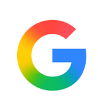

Tech
where i’ve worked, the orgs i’ve built with, and the projects i’m proud of.
experience
-
Eskwelabs Innovation Fellow (EIF)
Cohort 9, Data Analytics Track
- Built a scheduled GitHub Actions pipeline to fetch and version the Philippines’ top 25 trending topics via RapidAPI twice daily within free-tier limits.
- Implemented data validation, fallback recovery, and timestamp tracking to ensure reliable, meaningful trend data.
- Deployed an interactive Chart.js dashboard on GitHub Pages with ranked visualizations, tooltips, stale-data alerts, and error handling.
-
CSK Corporation
Supervised Industry Learning (OJT)
- Completed supervised industry training as part of TESDA NC III Java Programming qualification
- Developed structured presentation materials with scripts for company communication and reporting
- Designed presentation flow and supported promotional and advertising content preparation
organization timeline
-
AWS Student Builder Group PUP
Frontend Developer
- Translate UI/UX designs into responsive, functional client-side interfaces using modern web technologies
- Build accessible and performant web interfaces optimized for different devices and screen sizes
- Ensure visual consistency and usability across applications and tools
-
Department of AI Member
- Built a Retrieval-Augmented Generation (RAG) assistant using Langflow, Gemini, and Astra DB to deliver document-grounded AI responses.
- Implemented vector search, conversational memory, and prompt engineering techniques to improve response accuracy and personalization.
- Developed practical expertise in LLM workflows, embeddings, and AI system architecture through hands-on project deployment.
-
Google Developer Groups On Campus PUP
Data Science Associate
- Completed DataCamp Scholar training in Data Science, developing proficiency in Python, Pandas, data visualization, and analytical problem-solving.
- Applied data analysis and visualization techniques to derive insights from structured datasets using industry-standard tools.
-
Web Development Cadet
- Turned UI designs into responsive interfaces using HTML, CSS, JavaScript, and React.js
- Promoted to Senior Developer for leadership and consistent contributions to the Web Development Team
-
PUP Microsoft Student Community
Junior Data Scientist
- Built machine learning models in Python using Pandas and Scikit-learn for exercise recommendation, student performance classification, and sleep duration prediction.
- Performed data preprocessing, exploratory data analysis, feature encoding, missing-value imputation, and feature scaling across multiple datasets.
- Optimized models using Random Forest, Support Vector Regression, and GridSearchCV, achieving 98% accuracy in student performance classification.
certification

Google Advanced Data Analytics Professional
Google Coursera · Ongoing
Programming (Java) NC III
TESDA: Technical Education And Skills Development Authority
Issued December 2025
Show Credentialprojects
IsQolar
Turns enrollment day into a line you can see: one ticket from check-in to “You’re fully enrolled,” with your place in line, how long it will take, and when you can step away.
Sino
A caregiver app for looking after Lola, with a daily clock, a log, and an offline-friendly hub, in Filipino and English.
Emotion Recognition Camera
A live camera app that detects a face and labels the emotion it sees, with a confidence score.
X Trending Topics Dashboard
An interactive Chart.js dashboard of the Philippines’ top trending topics, refreshed twice daily by a GitHub Actions pipeline and hosted on GitHub Pages.
Barangay Blotter System
A dashboard for logging and tracking barangay incidents, with incident trends, pending blotter entries, and a persons database.
ALAITAPTAP
Uses crime pattern data and AI-powered routing to help you walk safely in Metro Manila, especially at night.